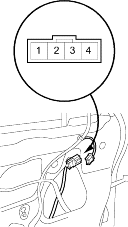
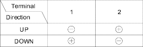

- Remove the door panel (see page 20-7).
- Disconnect the 4P connector (A) from the driver's window motor.
Terminal side of male terminals

- Test the motor in each direction by connecting battery power and ground according to the table. When the motor stops running, disconnect one lead immediately.

- If the motor does not run or fails to run smoothly, replace it.
- Remove the 4P connector to the driver's window motor and reconnect the 20P connector to the power window master switch.
- Connect the test leads of a voltmeter to the No. 3 and No. 4 terminals of the driver's window motor 4P connector.
- Run the motor by connecting power and ground to the No. 1 and No. 2 terminals. The voltmeter should read about 6 V.
- If the voltage is not as specified, check for an open in the wires. If the wires are OK, replace the driver's window motor.